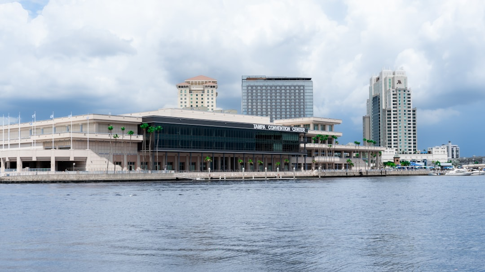

A Tampa roofing decision should start with observed condition, water entry details, contractor verification through Florida DBPR, written permit responsibility and a line by line scope comparison. The source page names three covering types, asphalt shingles, metal roofing and tile roofing, and frames the main decision as repair, inspection or replacement. It also states that an enquiry does not confirm availability, timing, price, inspection or acceptance of the work.
For Tampa homeowners comparing roof repair tampa options, the practical question is how to turn visible damage, water entry details and contractor findings into a written scope that can be checked before commitment.
Roof Repair Tampa Explained
Roof Contractor Tampa frames a roofing enquiry around the property, visible condition and whether water is entering. That order matters because a ceiling mark, displaced shingle or ageing surface does not identify the full work scope by itself. The useful first question is what was observed, what remains hidden and why a repair, inspection or replacement is being recommended.
For a repair discussion, ask the provider to trace the likely water path through the roof covering, flashing, valleys and penetrations. For an inspection, ask for a condition record that separates visible findings from assumptions. For a replacement quote, ask whether the written scope includes tear off, deck allowances, underlayment, ventilation, flashing, permits, cleanup and warranties.
- Share the roof covering if known.
- Describe when the issue began and whether water is entering.
- Note previous repairs and safe access constraints.
- Keep photos for a provider if they request them.
Who This Applies To
This guide applies to Tampa area property owners who need to organise a roofing conversation before they sign a scope. It is most relevant when the roof shows visible symptoms, when storm damage is suspected, when a roof is ageing, or when a quote must be compared against another written proposal.
The same questions can help with asphalt shingle, metal and tile roofs, but the details differ. A shingle discussion should not stop at colour or headline warranty. A metal quote should identify the system, fasteners, penetrations, edges and warranty conditions. A tile roof can look acceptable while the water shedding layers beneath still need careful review, so the support layers need to be part of the findings.
For another compact crawl path on the same subject, see this Tampa roof repair scope guide.
Repair, Inspection Or Replacement
A repair is the narrower path when findings point to a defined defect and a defined area. The written scope should say what will be repaired, what is excluded and whether nearby components such as flashing, underlayment or decking were visible enough to assess.
An inspection is useful when the roof question is still unresolved. The source page describes inspection findings as a way to explain condition, likely water path and the next decision without relying on a sales only conclusion. That makes the inspection document important when replacement and repair are both plausible.
Replacement becomes a different comparison. The scope should describe the assembly, not only the surface material. Ask for the layers, material choices, deck allowance, ventilation, flashing, inspections, cleanup and warranty conditions to be written clearly enough that competing proposals can be compared on the same basis.
Permit And Contractor Checks
The source page tells readers to verify the contracting business through Florida DBPR before signing. It also says the property jurisdiction and work scope determine the permit and inspection route. That means permit responsibility should be assigned in writing instead of being treated as an afterthought.
Ask the contractor which business accepts the work, which license scope applies and who is responsible for the permit process. If the property is affected by a local constraint, such as an HOA process or historic district review, ask how that constraint changes the sequence before work begins. Do not assume every Tampa area address follows the same route.
- Confirm the contracting business name before signing.
- Check the license and scope through Florida DBPR.
- Ask who handles permit responsibility.
- Keep the permit, inspection and warranty language aligned with the written scope.
Comparing Written Estimates
A line by line quote comparison is the simplest way to avoid comparing unlike scopes. One estimate may include deck allowance, flashing replacement, ventilation details and a magnetic nail sweep, while another may describe only the surface covering. The lower headline figure is not meaningful unless the inclusions and exclusions are the same.
Ask each provider to state what is included, what is excluded and what would trigger a changed scope after the roof is opened. Cleanup should be described, including nail collection where relevant. Warranty language should be tied to the named system and installation conditions, not left as a broad promise. If storm damage is part of the conversation, keep condition evidence separate from insurance decisions, as the source page recommends.
- Record the symptom. Write down the visible issue, when it began, whether water is entering and any previous repair history.
- Ask for findings. Request observed condition notes before accepting a repair, inspection or replacement recommendation.
- Verify the contractor. Check the contracting business and license scope through Florida DBPR before signing.
- Compare the scope. Review materials, layers, deck allowance, flashing, ventilation, permits, cleanup, exclusions and warranty language line by line.
| Situation | Useful next step | What to ask for in writing |
|---|---|---|
| Defined visible defect | Repair discussion | Repair area, exclusions and likely water path |
| Unclear condition | Inspection discussion | Observed findings, hidden limits and next decision |
| Widespread or ageing roof concern | Replacement comparison | Layers, allowances, permit responsibility, cleanup and warranty terms |
Common questions
Should I repair or replace a Tampa roof? The source page says the answer depends on where the damage is, how widespread it is, the roof covering and the condition of the deck, flashing and underlayment. Ask for inspection findings and both viable scopes in writing when the decision is not obvious.
Does a replacement quote need more than the surface material? Yes. The source page says replacement comparison should include tear off, deck allowances, underlayment, ventilation, flashing, permits, cleanup and warranties as one assembly.
Can an enquiry confirm price or timing? No. The source page states that submitting the form does not confirm availability, timing, price, inspection or acceptance of the work.
What should I check before signing? Verify the contracting business through Florida DBPR, confirm permit responsibility in writing and compare the same roof scope line by line.
This guide covers Tampa roofing decisions where repair, inspection, replacement, permit responsibility and written scope comparison need to be sorted before commitment.